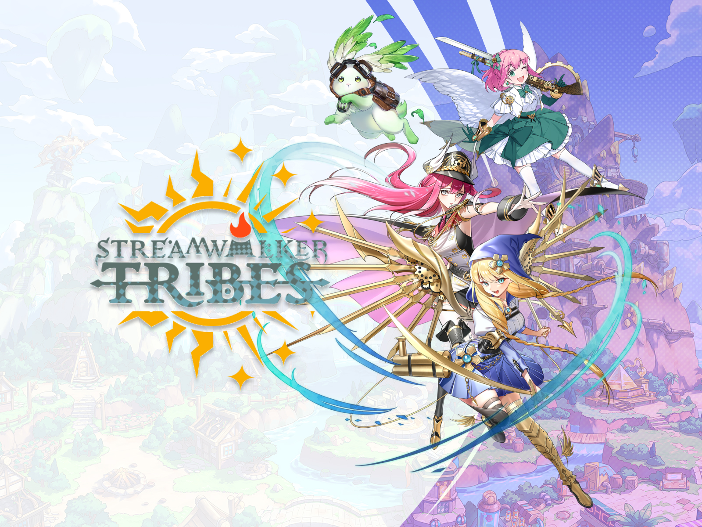
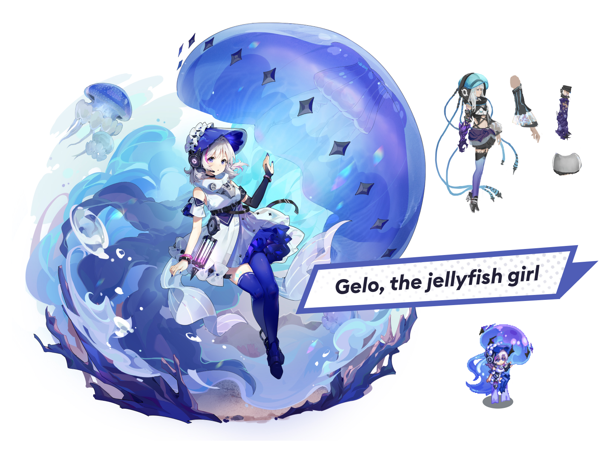
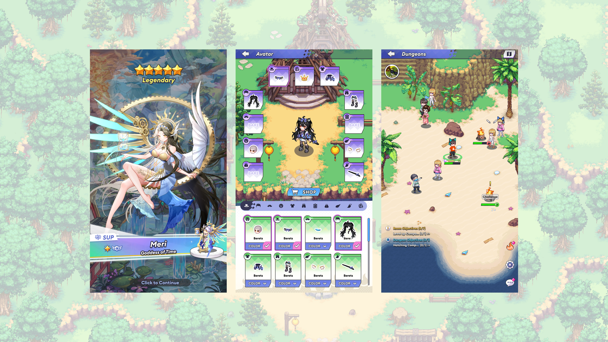

一款與多名 VTuber 合作開發的轉蛋 RPG——將日系動漫美學融合原創的五頭身像素娃娃設計系統，打造一套從第一眼便能辨識出「這就是我們」的視覺語言。 A gacha-RPG built with VTuber talents — anime aesthetics with an original five-head chibi pixel-doll system.
Role職責
領導全案美術方向，從奠定五頭身像素娃娃的視覺語言，到與各 VTuber IP 方協調品牌一致性，交付一款既保有日系動漫本格、又具有鮮明差異化辨識度的角色收集體驗。
Owned art direction end-to-end — language, IP alignment, delivery.
Craft創作
設計挑戰在於將多位客座 VTuber 統整於同一視覺體系內，卻不能抹去她們各自的辨識度。五頭身的比例成為那條共通語彙——足以保留每位角色的剪影特徵，也足以將她們收攏至同一個世界觀之中。像素風細節疊加在動漫底層之上，形成同業間無人採用的差異化外觀。
Unifying guest talents in one system without erasing what makes each recognizable.
Impact成果
- 在統一的視覺識別下，交付多位 VTuber 角色合作專案
- 建立五頭身像素娃娃設計系統，可延續運用於後續作品
- 獲得 VTuber 粉絲群與 IP 版權方的正面回饋
- 於飽和的轉蛋市場中，形成鮮明的美術差異化定位

＋
Key Art主視覺
建議 1600×1200 · 上傳位置

＋
Character Sheet角色設計
建議 1600×1200 · 上傳位置

＋
Banner Turn-Around卡池橫幅
建議 2400×1350 · 上傳位置